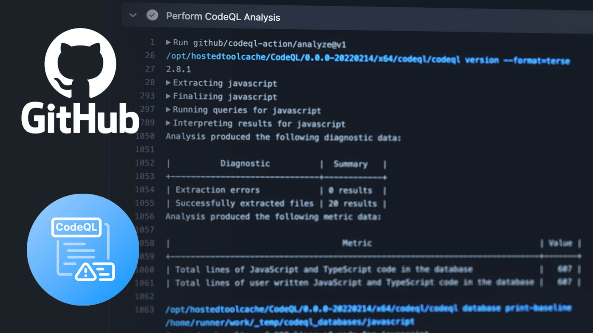
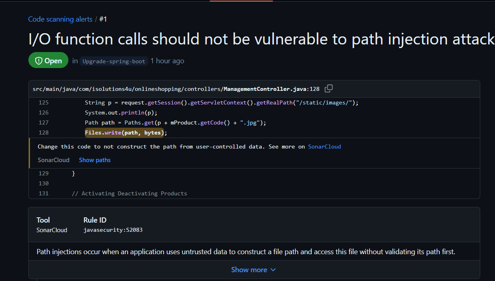

Análisis de Seguridad con CodeQL
CodeQL es una herramienta de análisis estático de código desarrollada por GitHub para identificar vulnerabilidades de seguridad, errores de codificación y otros problemas potenciales en el código fuente. En este artículo, te mostramos cómo se configuró y utilizó en el proyecto de Refactorización de Compras en Línea.
Instalación y Configuración en GitHub Actions
Para integrar CodeQL en el flujo de trabajo de GitHub Actions, sigue estos pasos:
- Agrega el archivo
codeql.ymla tus workflows: Crea un archivo en.github/workflowscon el siguiente contenido:
name: "CodeQL"
on:
push: { branches: [ "Upgrade-spring-boot" ] }
pull_request: { branches: [ "Upgrade-spring-boot" ] }
schedule: { cron: '18 17 * * 4' }
jobs: { analyze: { name: "Analyze (${{ matrix.language }})", runs-on: "ubuntu-latest", timeout-minutes: 360, steps: [...] } }
Resultados de CodeQL
Después de configurar el archivo codeql.yml, CodeQL realiza un análisis de seguridad del código fuente, proporcionando una amplia gama de resultados.
Vulnerabilidades de Seguridad
CodeQL identifica varias vulnerabilidades de seguridad, como:
- Inyecciones de SQL
- Desbordamientos de búfer
- Problemas de control de acceso inadecuado
- Vulnerabilidades de Cross-Site Scripting (XSS)
Errores de Codificación
Además de las vulnerabilidades de seguridad, CodeQL también detecta errores de codificación, como:
- Uso incorrecto de funciones y métodos
- Uso de variables no inicializadas
- Errores de sintaxis
- Errores de manejo de excepciones
Mejoras de Calidad de Código
CodeQL proporciona sugerencias para mejorar la calidad del código, como:
- Eliminación de código redundante
- Complejidad ciclomática alta
- Violaciones de buenas prácticas de codificación
Conclusión
CodeQL es una herramienta poderosa para analizar el código fuente y encontrar vulnerabilidades de seguridad y errores de codificación. Al integrar CodeQL en GitHub Actions, puedes mantener un alto nivel de seguridad y calidad en el proyecto, identificando y corrigiendo problemas antes de que lleguen a producción.
